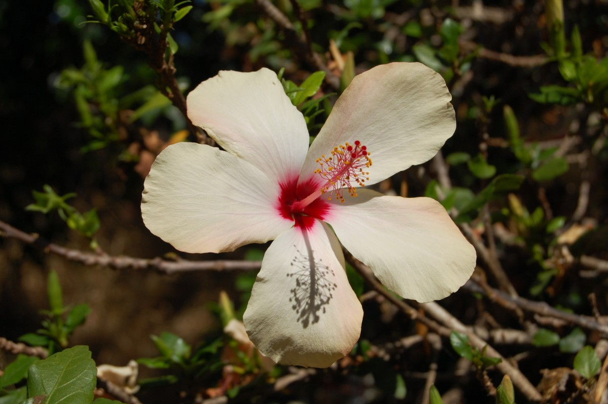

What's That Flower?
Learning about what's in my backyard
So I decided to take a shot at photography for the first time today.
As I write this post, it is currently early October, which means the flowers in my backyard are in full bloom, or at least, they seem like it (I'm not a botanist). I don't think I've shown my backyard enough appreciation over the years, so I picked up an old Nikon D40 and got to work. The user manual was missing, so it took me a bit to figure out what all the buttons and dials actually did, but after a couple YouTube videos, I felt like I was ready to start snapping some photos. I found that the camera is willing to do a lot of the work for you if you're a complete beginner like me. You could probably take better pictures with more manual adjustments, but that wasn't my goal for today. My real goal was to identify the flowers in the pictures I took. I can't help but feel that my knowledge about nature is lacking in general, so I was hoping to learn something from this experience.
Without further ado, let's go over my findings for each plant:
Paperflower (Bougainvillea glabra)
Finding the genus of this plant wasn't difficult. In fact, the Wikipedia article for Bougainvillea was one of the first search results, after a pile of images of similar looking plants. (Google really needs to improve the UI for reverse image searches.) What was surprising to me was the range of claims for how many species there are in Bougainvillea. Bougainvillea belongs to the family Nyctaginaceae (the four o'clock family) and contains between 4 and 22 species, depending on who you ask. I believe my specimen is Bougainvillea glabra, also known as the lesser bougainvillea or paperflower. Fun fact: the actual flower is the tiny white part at the end, while the papery leaves, known as bracts, are actually purple. Paperflower thrive in arid climates and are frost sensitive, so they are commonly grown as an annual or container plant.
Blue Jacaranda (Jacaranda mimosifolia)
I chose this image specifically because it contained a friend (the praying mantis), but the entire tree is beautiful. Other names for the plant include black poui, Nupur or fern tree, while older sources classify it as J. acutifolia. The tree is native to South America, however it has made its way into every frost free region of the world. However, established blue jacarandas are able to survive brief periods of time below freezing. It is considered an invasive species in parts of South Africa and Australia where it can outcompete native species. The tree was actually banned in South Africa in the early 2000s due to water scarcity, however it was later unbanned because of local popularity. On the other hand, it is listed as Vulnerable in the IUCN Red List in its native habitat.
Chinese Hibiscus (Hibiscus rosa-sinensis)
I was surprised to learn that these two flowers are actually the same species, even though they're totally different colors. Confusingly, Chinese hibiscus is also known as Hawaiian hibiscus, but it was actually cultivated by Polynesians in the west Pacific. It is widely grown as an ornamental plant and it is the national flower of Malaysia, though it is also considered the unofficial national flower of Haiti. Chinese hibiscus has a genetic condition known as polyploidy, which means it has more than two full sets of chromosomes. This is why the flower can take on so many different colors. Because of its striking appearance and large variance, competitions are held to see who can create the most unique varieties. Aside from looking pretty, it also has many uses, ranging from shoe shiner to pH indicators.
Cape Plumbago (Plumbago auriculata)

The Cape plumbago is also known as the Cape leadwort, and has varieties with white and blue flowers. It is native to South Africa's Western and Eastern Cape regions, hence the name. These names are also shared with the genus Ceratostigma. The name Plumbago comes from the Latin word "plumbum" which means "lead", as Pliny the Elder suggested it could be used as an antidote to lead poisoning. The flower can cause contact dermatitis however, so handle with care. Cape plumbago is visited by many butterflies and their leaves serve as food for the caterpillar of the hummingbird hawk-moth, but the calyx is sticky and can sometimes catch bugs up to the size of a housefly. It's not clear what the purpose of the sticky calyx is, but it's believed that the Plumbago species are related to the ancestors of carnivorous plants.
Final Thoughts
These photos were originally taken at a 3008x2000 resolution and then scaled down for faster page loads. That's kind of weird, right? Why isn't it a perfect 3:2 ratio? I know I'm new to photography, but I can't think of any good reason for this weird aspect ratio. Are the extra 16,000 pixels relevant in image editing? I haven't gone through all of the camera settings yet, so maybe something is just misconfigured on my end. Still weird, though.
Anyways, I had originally planned to research five types of flowers, but it turns out two of them were the same! I've never had any interest in botany, but learning about all of these flowers was fascinating. When it comes to flowers and even plants in general, there's a lot more than meets the eye. There aren't any more flowers in my backyard, but there's probably some other species in my neighborhood that I've never noticed before. If I find enough new flowers, expect a sequel to this post. And to you, dear reader, I encourage you to explore your neighborhood and find something cool. The next time you go out, maybe stop and smell the roses. You might just learn something new.